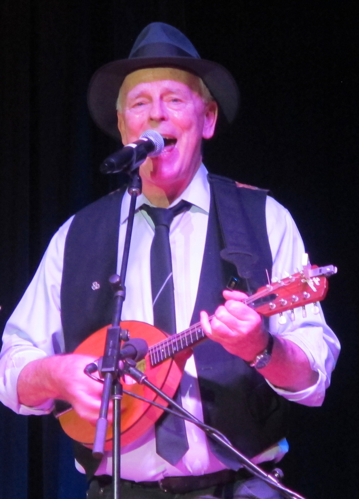

The Princess & the Bodyguard discovered their true identity one cold day in New York. A gentleman approached them, looked them up and down, taking in all the fine details, including, importantly, that the Bodyguard was carrying a mandolin. He stopped - he paused - and said "You Princess, go there " as he motioned towards a yellow taxi. "You, Bodyguard, go with her". And in that moment, the Princess & the Bodyguard knew their true identities. A Princess was born - and the Bodyguard was given his mission to look after the Princess.
...and together they were given their mission to move people through music - joy, laughter, reflction, tears; to feel love and life and everything it has to offer ...
The Princess and the Bodyguard are very eclectic in their musical tastes, and play a broad variety of music including 50s, 60s, 70s & 80s rock; celtic; and folk.
Princess

The Princess, of the angelic voice, has been singing since before she can remember, and she has been constantly entranced and enchanted by song. The Princess started playing piano when she was 6, guitar when she was 7, and won voice scholarships to the Conservatorium of Newcastle in her teenage years. She also plays fiddle, whistle & mandolin. An accomplished songwriter, she continues the fine folk tradition of telling the significant s tories of our times through her original songs.
Despite being a Princess, shehas performed at pubs, clubs and festivals, i including Illawarra Folk Festival,Kangaroo Valley Folk Festival Gundagai Turning Wave Festival, & Cobargo Folk Festival.
Bodyguard

The Bodyguard, the brilliant singer and down and dirty fiddler, guitarist and mandolinist, survived the folk scene in New York in the 70s. He moved to Australia chasing a dream, and has been playing in various bands ever since - including Shearer's Dream, the Ragged Band, the Selkies, No Messin and GreenJame. The Bodyguard's vocals, often entwined with the Princesses, bring a new reality to the songs, and there are often sparks coming off his fiddle in the jigs and reels.
The Bodyguard has played many venues over the years, at pubs, clubs and festivals, including Illawarra Folk Festival,Kangaroo Valley Folk Festival Gundagai Turning Wave Festival, & Cobargo Folk Festival. Celtic Festival at Glenn Innes.